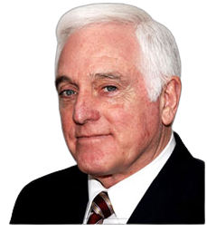

¿QUIENES SOMOS?
Ubicada en un predio de 3.500 m2, zona protegida de hermosa vegetación a escasos km de la
Ciudad Autónoma de Buenos Aires, nuestra residencia para mayores y hogar para ancianos
cuenta con un diseño arquitectónico especial, que fue diseñado por un equipo
interdisciplinario de profesionales de la arquitectura y la medicina sanitarista. Inspirados
en las nursing homes europeas, estos arquitectos lograron adaptar dichos conceptos a nuestro
medio, logrando un lugar único para la función requerida.
En nuestra residencia para la tercera edad nos abocamos al cuidado de adultos mayores
con sumo profesionalismo y con una actitud amorosa. Residencia La estancia no es una
casa de retiro o de reposo más: es una casa hogar de descanso que se ocupa de ofrecer
calidad de vida y calidez humana a cada huésped. En esta vivienda y hogar para abuelos
los días transcurren plácidos y llenos de buenos momentos compartidos, ya que es un
hogar para adultos donde realizamos diferentes actividades para mayores.

Director Médico y Fundador
Dr. Jorge A. Jalon
“Debemos erradicar el concepto de irreversibilidad de esta etapa de la vida, como el de la necesaria dependencia. Nuestros adultos mayores deben vivir en máxima plenitud